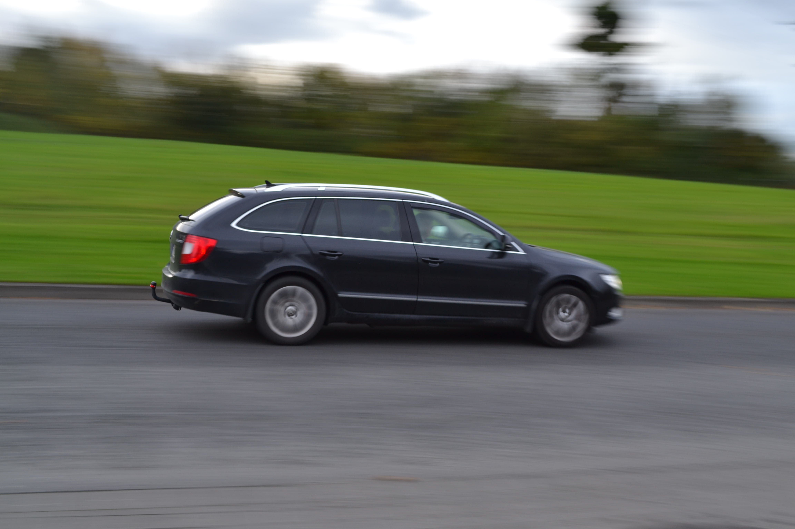
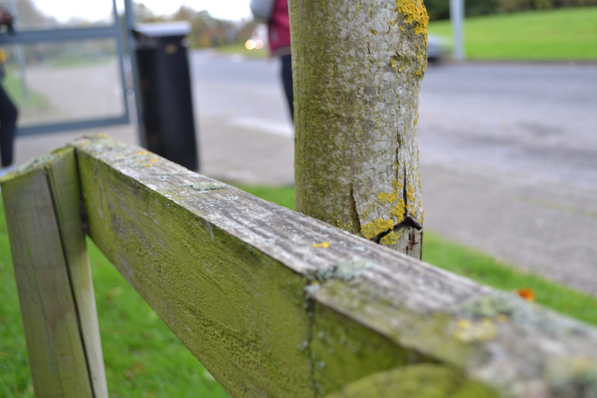
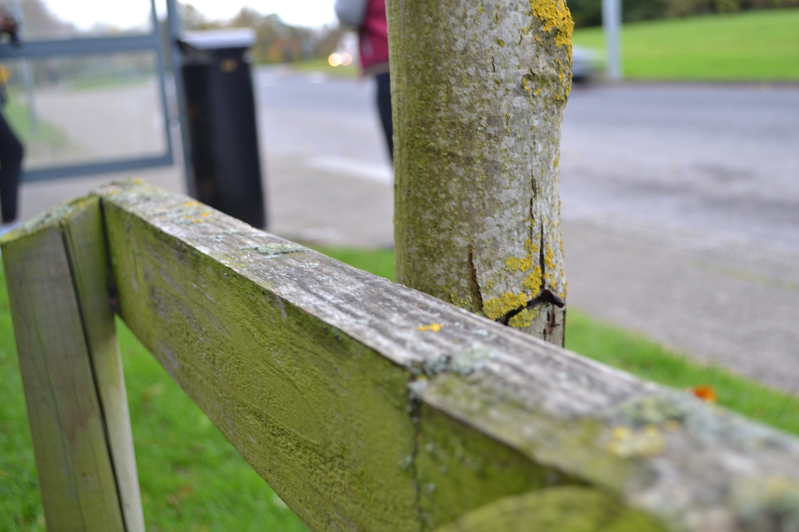
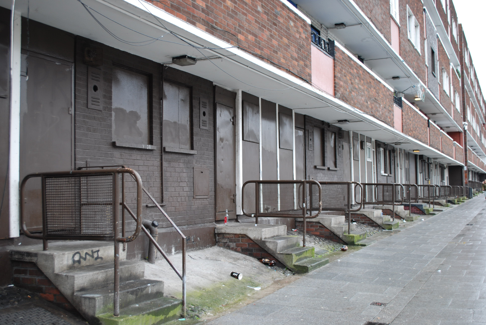
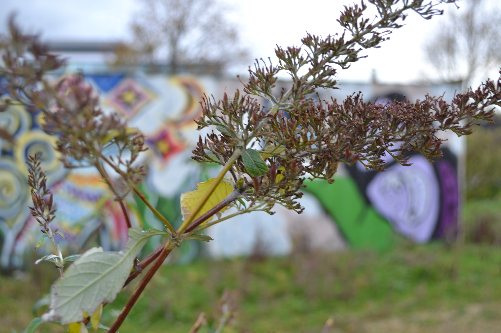
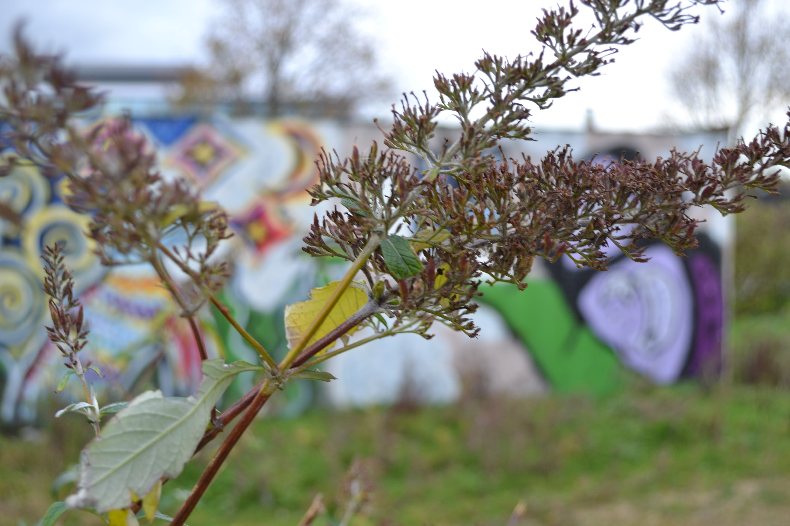

During the year we've done alot of different things in Photograhy, I like these pictures in particular as i feel like despite the fact I amn't the best at Photography these pictures are pretty cool and show of some interesting techniques we learned.







